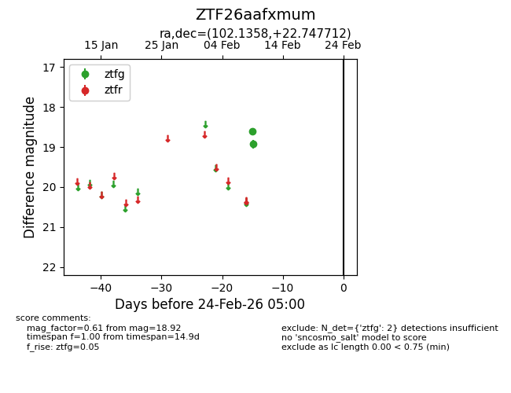
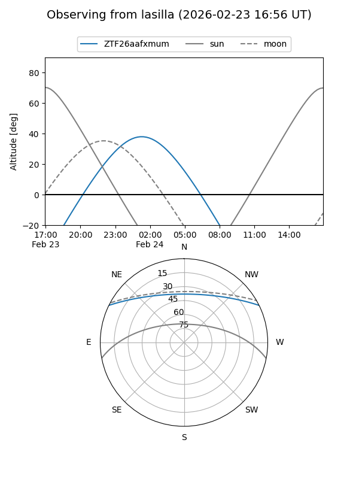
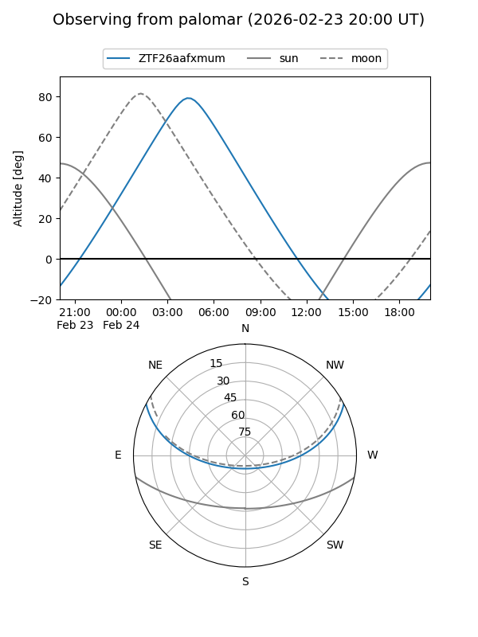

ZTF26aafxmum
Target ZTF26aafxmum at 2026-02-24 09:08
Aliases and brokers:
FINK: link
Lasair: link
ALeRCE: link
alt names
ZTF26aafxmum (ztf,fink_ztf)
Coordinates:
equatorial (ra, dec) = 102.1358,+22.74771
equatorial (HMS+DMS) = 06:48:32.59,+22:44:51.76
galactic (l, b) = (192.1777,+9.55245)
Flags:
Photometry:
last ztfg=18.92
2 ztfg detections
Lightcurve

Visibility


Additional plots